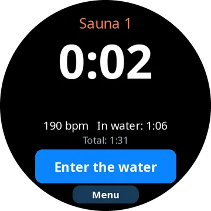

Cold Dip
Ice swimming, cold plunges and sauna sessions — timed on your Amazfit watch, with heart rate, GPS and history.
The app has been submitted and is in review. When it is accepted, this button will open the Zepp App Store listing.
7-day free trial with every feature, then a one-time $4.99 unlock through KiezelPay. No subscription.
How it works
A short look at one session, from the start screen to how you felt afterwards.
Watch the session
- Open Cold Dip on the shore. Set the water temperature with − / + and press START.
- On shore: the timer runs while you get ready. Press when you go into the water.
- In the water: time in the water, heart rate, water temperature and GPS for open-water swims. Press when you get out.
- After you get out: time since you left the water and a rewarming (afterdrop) countdown.
- Sauna, if you use one: the app times the round, then you can go back to the water or finish.
- How you felt, 1–5, then save. History and personal records stay on your watch.
Screenshots
The same session on a round and a square Amazfit watch.
Round watches

Start 
On shore 
In the water 
After you get out 
Sauna 
How you felt
Square watches

Start 
On shore 
In the water 
After you get out 
Sauna 
How you felt
Price
The whole app is paid — there is no separate “Pro” unlock later.
- A free 7-day trial with every feature, starting when you first open the app.
- Then a one-time unlock of $4.99 through KiezelPay (kzl.io). The watch shows a code; you pay in the browser.
- No subscription. The app never sees your card details. Payment is handled by KiezelPay.
Supported Amazfit watches
Cold Dip runs on Zepp OS 3 (API 3.0) and newer. The store listing will show the exact models once Zepp has accepted the package.
- Balance Balance, Balance 2, Balance 2 XT, Balance 3, Balance Ultra
- Active Active, Active 2 (round and square), Active 3 Premium, Active Edge, Active Max
- T-Rex T-Rex 3, T-Rex 3 Pro, T-Rex Ultra, T-Rex Ultra 2
- Cheetah Cheetah (round and square), Cheetah Pro, Cheetah 2 Pro, Cheetah 2 Ultra
- GTR / GTS / Falcon GTR 4, GTS 4, Falcon
- Bip Bip 5 Unity, Bip 6, Bip Max
Bip 5 Unity has no GPS. Profiles with a route will show “searching for GPS…”; the rest of the app works.
Not supported (older Zepp OS): GTR 3, GTS 3, GTS 4 Mini, GTR Mini, Bip 5 (the non-Unity model), T-Rex 2 and Band 7.
Privacy and weather
There is no account, no analytics and no advertising. Heart rate, GPS and your session history stay on the watch.
When the phone is connected, weather (air temperature, wind, conditions) comes from MET Norway Locationforecast 2.0, used under CC BY 4.0. Only an approximate position is sent to api.met.no. Attribution: © MET Norway (CC BY 4.0).